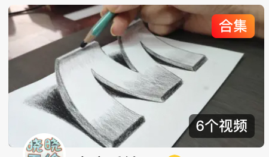
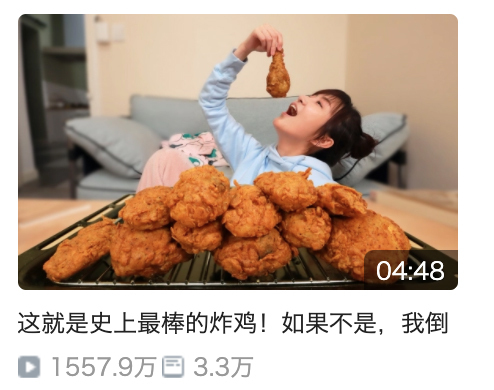
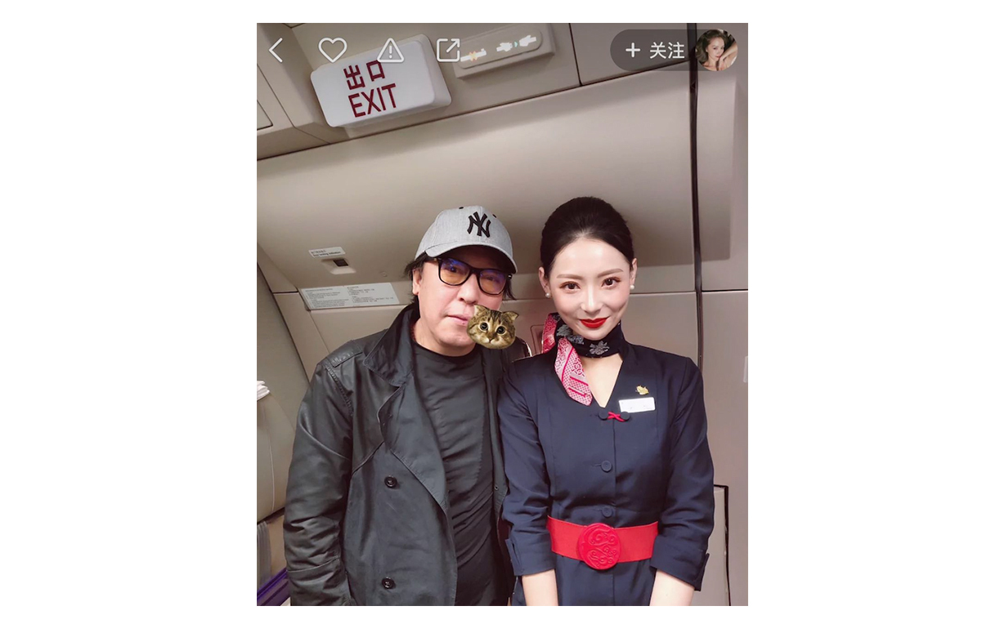
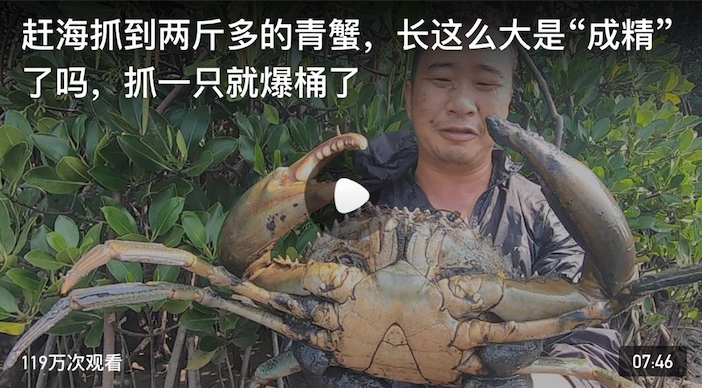
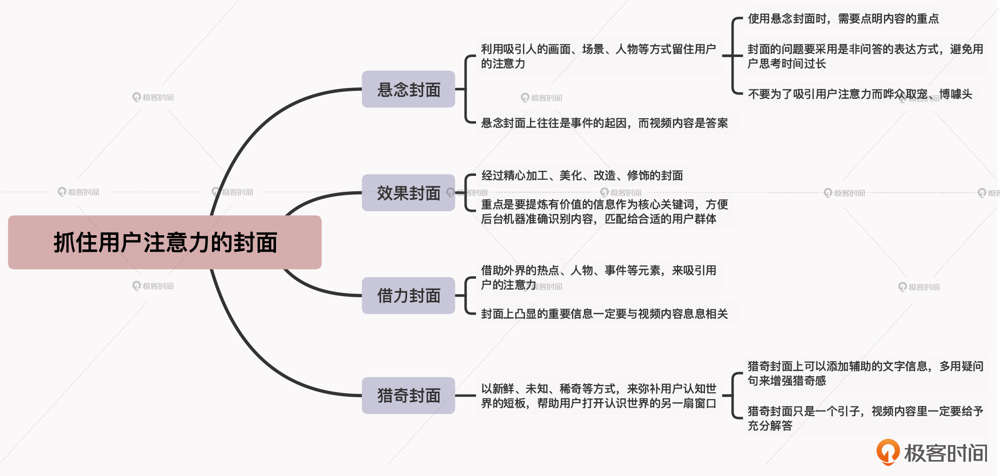

- 00 开篇词 短视频时代下，怎么把握好变现风口？.md.html
- 01 爆款短视频的底层逻辑：用心拍的短视频为啥没人看？.md.html
- 02 爆款短视频的底层逻辑：如何轻松打造自我特色？.md.html
- 03 精益创业法：如何快速跨过从0到1这道坎？.md.html
- 04 SWOT法：这么明显的个人优势你为啥就是看不到？.md.html
- 05 效用函数法：如何用量化的方式进行高效创作？.md.html
- 06 二次创新实验法：如何打造个人的差异化定位？.md.html
- 07 平台定位：如何选择最适合自己的创作平台？.md.html
- 08 如何快速找到各大短视频平台的正确切入点？.md.html
- 09 选题（上）：如何利用思考清单找到合适选题？.md.html
- 10 选题（下）：如何为不同的内容定制合适选题？.md.html
- 11 优劣分析法：如何快速筛选适合创作的视频素材？.md.html
- 12 标题（上）：如何利用微创新巧妙找到爆款标题？.md.html
- 13 标题（下）：如何用对号入座的方式抓住标题亮点？.md.html
- 14 视频封面（上）：如何快速抓住用户注意力？.md.html
- 15 视频封面（下）：如何传递最有价值的信息？.md.html
- 16 视频剪辑：如何轻松掌握视频化剪辑的三大公式？.md.html
- 17 效果反馈法：剪辑很容易，为什么你却一直学不会？.md.html
- 18 剪辑对比（上）：如何避开常见的短视频剪辑陷阱？.md.html
- 19 剪辑对比（下）：如何利用剪辑技巧提升视频质量？.md.html
- 20 拉片法：用电影创作的方式学习爆款短视频运营技巧.md.html
- 21 用户留存率：为什么粉丝很多但忠实拥趸却很少？.md.html
- 22 点赞率（上）：如何有效提升短视频的点赞量？.md.html
- 23 点赞率（下）：三种方法轻松提升用户对内容的认可度.md.html
- 24 上瘾机制：为什么视频观看量很高却没人留言？.md.html
- 25 避坑指南：为什么很多短视频账号中途做不下去了？.md.html
- 26 如何找到适合自己的短视频变现模式？.md.html
- 27 多元化变现：如何明确不同创作阶段的变现任务？.md.html
- 28 多内容变现：不同内容的主打变现模式是什么？.md.html
- 结束语 一切成大事者，都是终身学习者.md.html
- 捐赠
14 视频封面（上）：如何快速抓住用户注意力？
你好，我是周维。
俗话说，“看书先看皮，看报先看题”。在文字阅读时代，读者要看什么、先看什么，很大程度上都取决于标题。
但是在如今的短视频时代，内容都是以视觉化的方式呈现出来的，除了要起好标题之外，视频封面的选取也同样非常重要。因为这是用户第一眼就可以触及的内容区域，它关系着用户到底要不要打开视频观看。
所以说，视频封面是否可以让用户在最短时间内没有犹豫地点开内容，是标志着内容作品能否成为爆款的重要因素之一。
接下来，我就会花两节课的时间，来带你了解如何打造有吸引力、能传递价值信息的视频封面。今天，我重点来讲四种能快速抓住用户注意力的视频封面打造方法，分别是悬念封面、效果封面、借力封面、猎奇封面。
下面，我们来具体了解下这四种封面的应用场景与实践方式。
悬念封面
我们先说一下悬念封面。悬念封面，简单来说就是利用一些吸引人的场景、画面、人物等等，让用户看到封面后会迫切地想要了解事情的真相或事件的走向。
关于悬念封面，你可以记住一点：悬念封面所传递的，往往是问题或事件的起因，而视频内容给予的则是答案。
我举个例子，有一位Vlog博主用短视频记录了和朋友在公园玩浮垫的游戏过程，游戏规则是这样的：如果可以快速通过摇晃不定的浮垫到达对岸就是胜利，反之失败。
这个短视频的封面，就选取了主人公快速跑向对岸的画面，并留下了“最后落水了吗？”的发问，形成了标准的悬念封面，用户一看到这个封面就迫切地想寻找答案：到底落水了还是顺利通过了？从而就吸引了用户的好奇心和注意力，视频在短短几小时里也突破了100多万的播放量。
不过在使用悬念封面的时候，你还需要注意三个地方，下面我就结合具体的例子来给你讲一讲。
1. 使用悬念封面时，需要点明内容的重点。
悬念封面上必须要有重点聚焦的内容呈现，也就是说用户一看到封面就知道你要表达的意思，而不会产生多余的联想，这一点是形成悬念的关键所在。
就像刚才我举的例子中，这个Vlog封面的内容焦点就是一个向浮垫奔跑的女孩，没有其他多余的人物或者画面，用户一看到这个问题“最后落水了吗？”，就知道博主说的是这个女孩，而不是其他人。
之前我有个做短视频的朋友，让我帮忙看看他的悬念封面，我一看就知道完全不成立。他的视频封面就是一个人群行走的街头，然后搭配了一个问题：她会来这个城市闯荡吗？
用户看到这个画面完全不知道在说什么，因为画面没有重点聚焦，不知道该关注谁。另外，她是谁？她来不来这个城市闯荡跟用户有什么关系？这都是很模糊的问题，从而也会导致用户的观看兴趣降低。
2. 封面的问题要采用是非问答的表达方式，避免用户思考时间过长。
是非问答的表达就是指封面上提出的问题，答案只有“是”或者“不是”。这是因为，用户在浏览短视频时停驻思考的时间会非常短，如果封面的问题需要用户进行过多的联想，那他们就会失去兴趣，马上把这个视频划到一边了。
3. 不要为了吸引用户注意力而哗众取宠、博噱头。
我们要知道，使用悬念封面只是一种创作的手段，但绝不是创作内容的最终目的，因此在使用悬念封面时，不要刻意为了吸引用户眼球而去营造哗众取宠的效果。
比如有的创作者为了吸引用户注意力，封面上采用一些隐晦的、让人想入非非的画面，其实跟内容没有任何关系，一旦被平台查到，就会轻则警告，重则下架，甚至还会封号处理（平台的用户守则或创作中心里会给出详细的禁忌创作内容介绍）。
效果封面
我们接着来说一下效果封面。效果封面是指经过精心加工、美化、改造、修饰的封面。效果封面具有一定的审美价值，可以起到让人眼前一亮、赏心悦目的作用。

效果封面的重点是将视频内容中有价值的信息提炼出来，成为内容的核心关键词，这样可以让机器在第一时间抓住重点，推送给适合的目标用户群体，从而为创作者增加更多的流量。
比如，一些美食类创作者每次创作完内容后，会将视频内容中最美的一帧画面，或者是自己拍摄的一张漂亮的美食照作为封面，让用户看了之后能够产生非常想吃的欲望。同时，还会在封面上添加跟美食相关的一些关键词，比如美食的名称、做法、受众人群、特色，等等。

这里我要提醒你一点，效果封面并非只是追求美观就行，还需要能产生转化效果。而且，一定是要跟创作的内容核心紧密关联的。
换句话说，就是当用户看了封面之后，可以带动用户内心的某种欲望，让用户产生点开的念头。具体的做法，就是你要将完成的作品展示在封面上，来吸引用户的注意力。在展示自己成功作品的时候，要注意用好修图工具进行完善、迭代，或者可以搭配重要的文字信息，目的就是能够让后台的机器第一时间抓取你内容的关键信息，推送给匹配的用户群体。
借力封面
好，接下来，我们再说一下借力封面。
“借力打力”这个词我们应该都听说过，它最早是来自太极拳中的一个说法，就是借助别人的力量转化为自身的力量打出去，给对方造成更大的伤害。
那么所谓的借力封面，我们就可以理解为是借助外界的热点、人物、事件等元素，来吸引用户的注意力。这些元素都是自带流量且具有影响力的，我们可以提前借助这些先天性可以吸引用户的元素，作为封面的主打。
比如，有一些创作者的封面会放上一些有知名度的人物，或者是与名人的合照，这样来瞬间抓住用户的眼球。

你也可以把一些热点事件的人物、影视剧中的角色、行业的先进代表、网红打卡圣地等放在封面，也可以起到吸引用户注意力的效果。
借力封面其实可以理解为是一种“蹭热点”的方法，所以在使用时你需要注意，封面上凸显的重要信息一定要与视频内容息息相关。也就是说，借力封面要把视频中的重点信息摘选出来，然后通过那些自带流量属性的人物、地点、事件等元素，来作为吸引用户注意力的手段，让用户能第一时间停下来，关注到你创作的内容。
除此之外，借力封面不能作为长期内容运营的主打方式，不然用户就只会去关注你封面上的流量人物，而不会去关注你自己，这非常不利于你的IP打造，也会影响你的变现。
猎奇封面
最后，我要给你介绍的就是猎奇封面。
猎奇是人的本性使然，这是人类的一种通过寻找、探索新奇事物来满足好奇心的心理状态。不管在哪个内容领域，跟猎奇有关的内容都是用户特别喜爱、追捧的焦点，比如探险类的影视剧、探索类的纪录片等，是多少年来长盛不衰的好题材。
所以在短视频内容创作中同样也是如此，猎奇封面就是以新鲜、未知、稀奇等方式，来弥补用户认知世界的短板，帮助用户打开认识世界的另一扇窗口。
一般来说，在短视频领域，猎奇封面多出现在旅行、三农类等创作内容中，封面上是以具有视觉冲击力的当地特色元素为主。比如，一个生活类内容创作者，有一次在海边赶海看见了巨大的一只青蟹，于是视频封面就用了他表情夸张怀抱大虾的画面，起到了猎奇与吸引注意力的作用。

再比如，一个三农类型的内容创作者也采用了猎奇的视频封面，画面是他指着一个黑漆漆的洞穴，说自己发现了一种奇怪的动物。由于采用了猎奇封面，这个视频的播放量要高于他平时拍摄的内容，播放量达到了五百多万，点赞量也飙升到了百万之多。
好了，现在我们知道了在短视频创作中猎奇封面的重要性，那么对于使用猎奇封面应该注意些什么呢？我认为主要有两点。
第一，猎奇封面上可以添加辅助的文字信息，多用疑问句来增强猎奇感。猎奇封面可以不只是用户没有见过的事物，还可以是用户在某方面知识上的短板、认知上的不足等，所以你可以通过文字提问的方式来增强悬念和猎奇的感觉。
第二，猎奇封面只是一个引子，视频内容里一定要给予充分解答。猎奇封面是可以快速吸引用户注意力的方式，它有一定的噱头性，可以满足用户在某一方面的好奇心，但是，你的视频内容中一定要能给予充分的解答，最好能把事件的来龙去脉完整地介绍一下。
小结
这节课，我给你介绍了四种可以抓住用户注意力的视频封面打造方法，你要重点关注。
- 悬念封面：利用吸引人的画面、场景、人物等方式留住用户的注意力。一般来说，封面上往往是事件的起因，而视频内容是答案。一定要记得，不要在封面上留足噱头，但是内容中没有解释，这样的行为会非常影响用户的观感。
- 效果封面：通过多种修饰的方法将最好的视觉效果呈现在封面上，同时还可以添加一些内容中的关键词，方便后台机器准确识别自己的内容，然后匹配给合适的用户群体。
- 借力封面：借助外界有影响力的热点、人物、事件等元素，来吸引用户观看内容。这里一定要注意，采用借力的封面上不能只体现了热点，而没有凸显内容价值，否则会留不住用户。
- 猎奇封面：以满足用户的好奇心为出发点，通过新鲜、新奇的事物来吸引用户观看自己的内容。注意，采用猎奇封面时，需要能在内容中提供具体的价值点。另外，我建议最好不要经常使用猎奇封面，不然一旦内容中提供的信息不能满足用户的需求，就会被平台判定为标题党。
最后我还想再说一点，你要记得，这四种封面并非只是围绕一种内容类型，而是可以运用在多个内容领域当中。你在使用的时候，一定要注意把握好每种封面的特性和禁忌，避免因为操作不当而导致出现争议，受到平台的惩罚。

思考题
请你从今天学习的四种封面中，选择一种视频封面的打造方法，并结合自己的内容领域，来思考一下具体的创作构想与展示出来的画面是什么吧。欢迎在留言区分享你的思考过程。
另外，如果你觉得有收获，也欢迎把今天的内容分享给更多的朋友。感谢你的阅读，我们下节课再见。
© 2019 - 2023 Liangliang Lee. Powered by gin and hexo-theme-book.